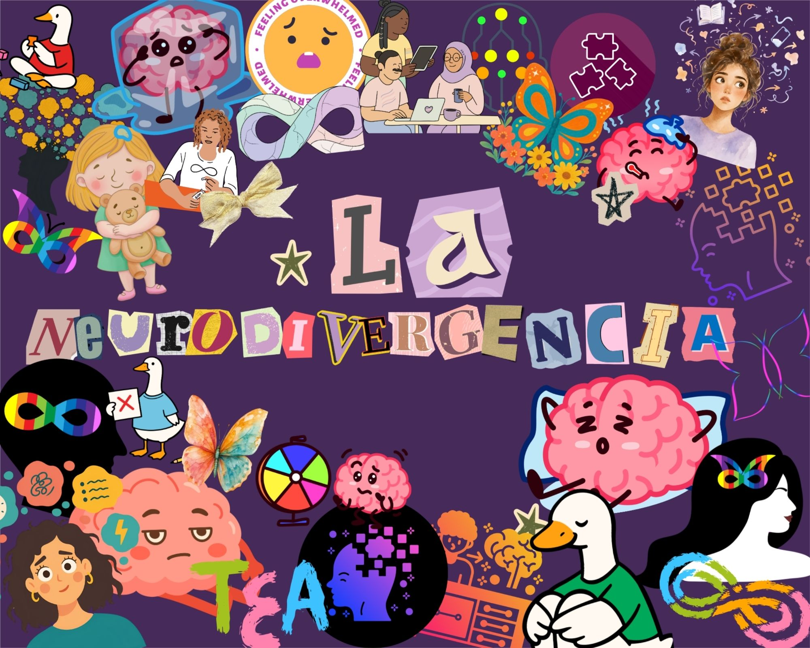

Celebrando la variabilidad del cerebro humano
La neurodivergencia es el concepto que reconoce que las diferencias en el funcionamiento cerebral son variaciones naturales del genoma humano. No somos defectuosos; somos diversos.
